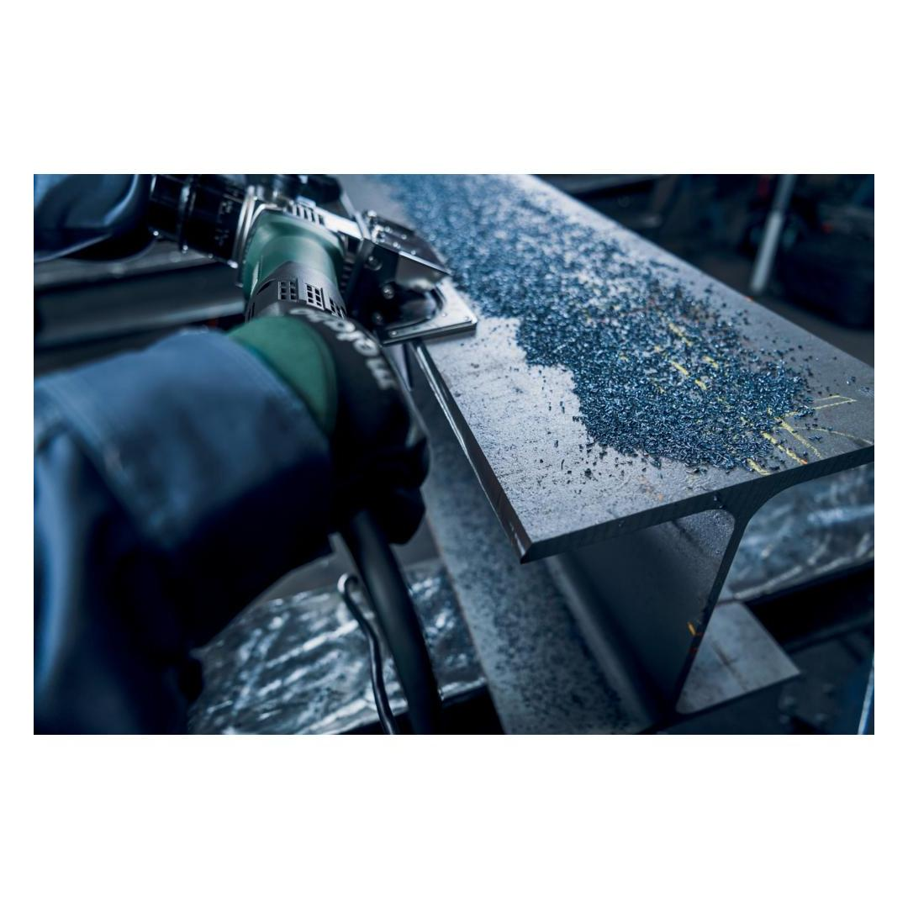
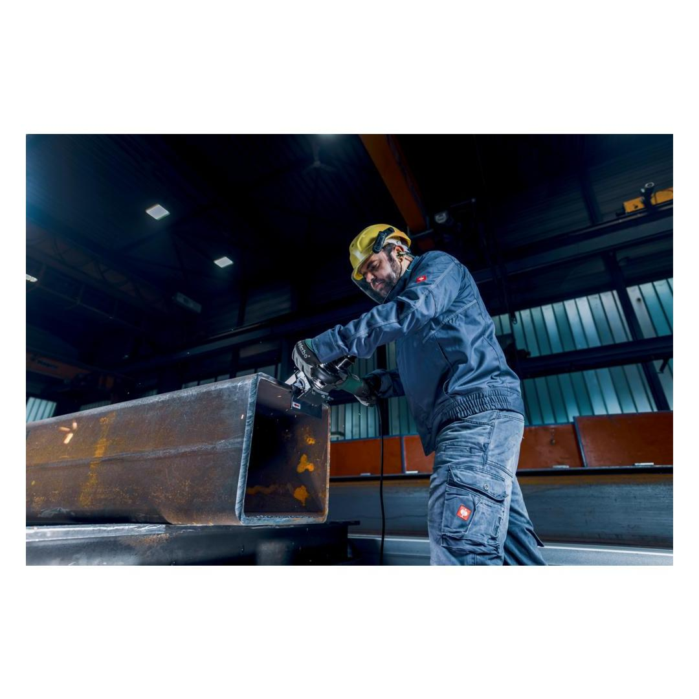
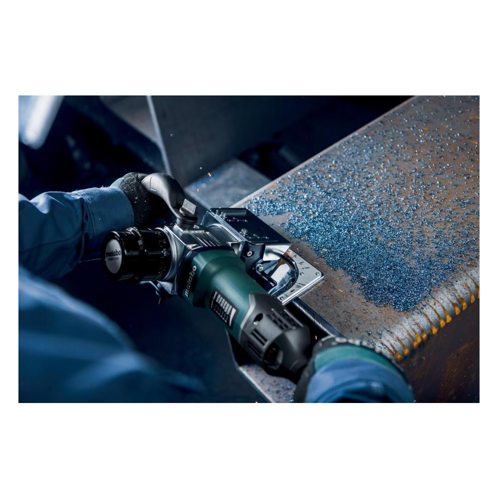
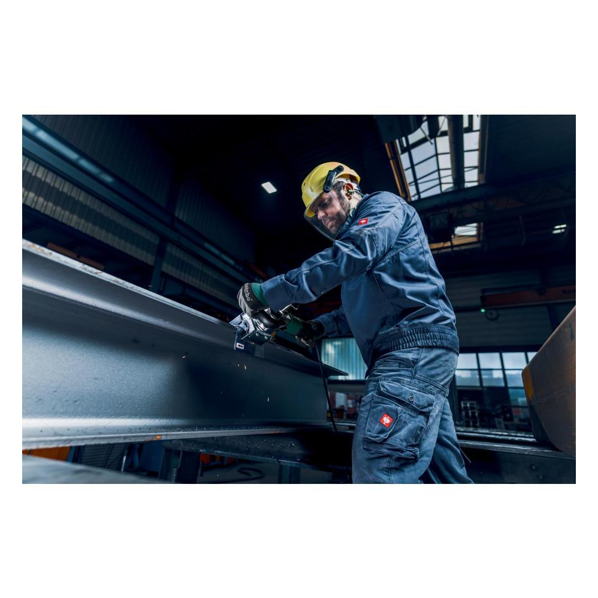
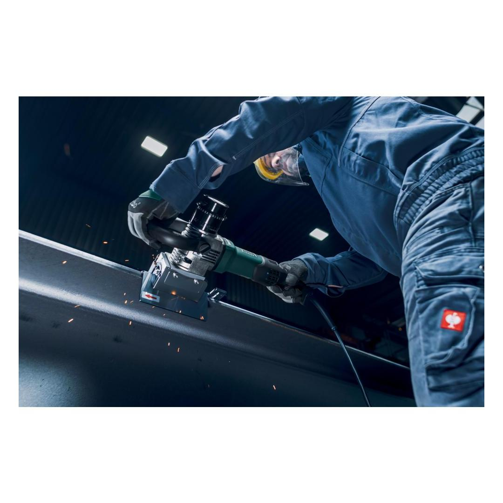
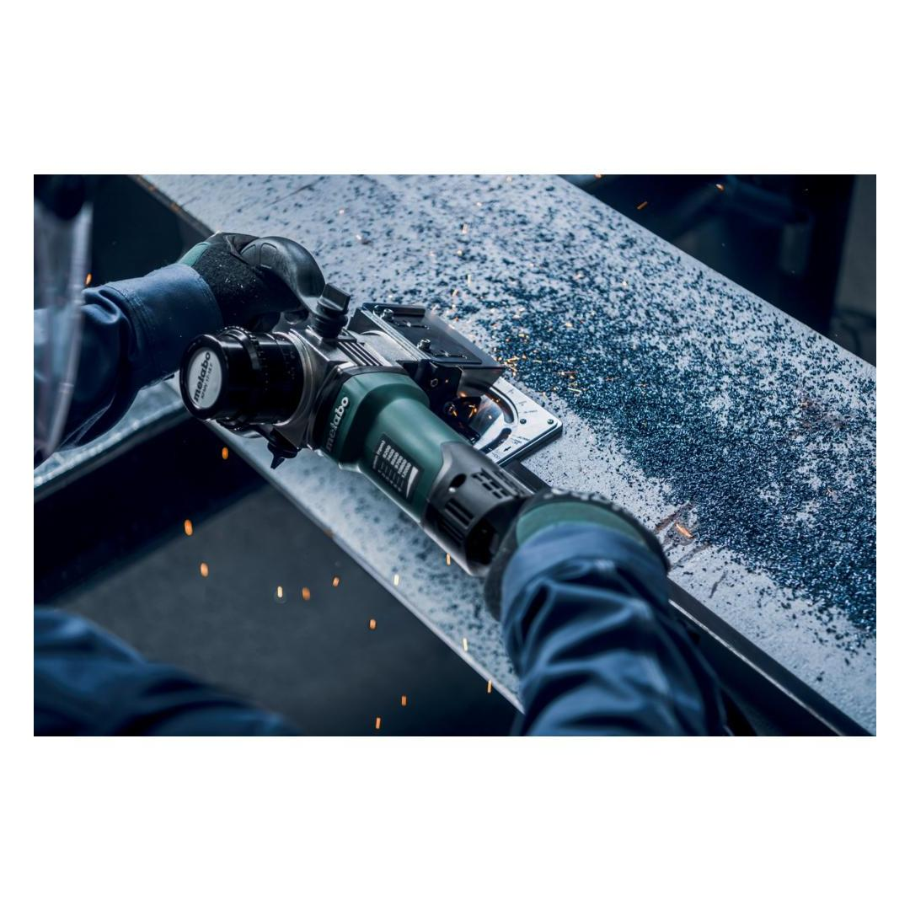
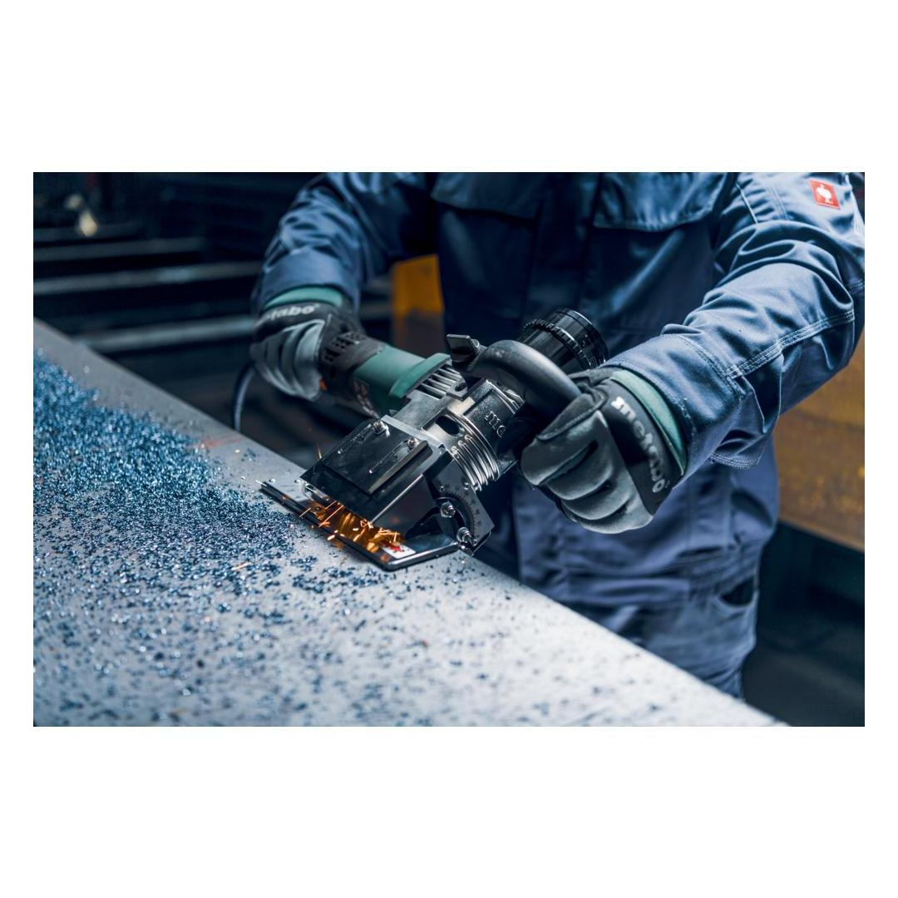
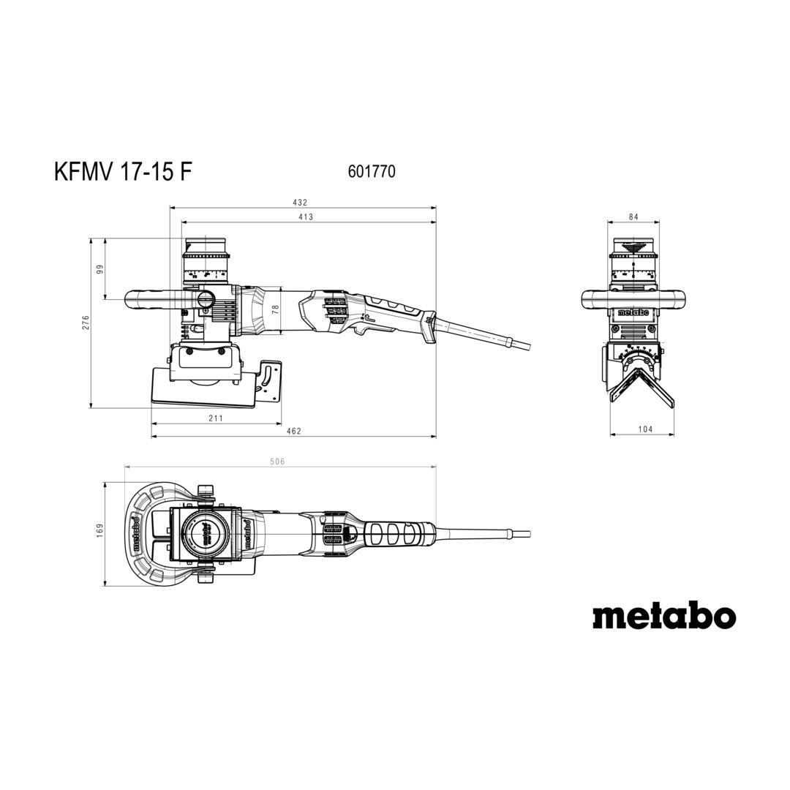

Metabo | Chamfer, Weld Seam Preparation on Flat Surfaces & Pipes
601770500









| Rated input power | 1700 W |
| Max. chamfer height at 45° | 15 mm / 19/32 " |
Product Description
- Metal bevelling tool for chamfer heights up to 15 mm for weld seam preparation
- One-touch controller: Patented, tool-free setting of the cutting depth in 0.1 steps; stop points for short setting times, and protection against unintentional adjustment of the cutting depth when working
- Precise setting of the chamfer angle directly via the guide plates
- Universal milling head with three carbide indexable inserts for all chamfer angles from 0-90°
- Guide stop for a uniform finish and high quality surface finish when processing straight edges
- Controlled working by virtue of large-scale guide plates
- Stop roller to guide along pipes for easy preparation of weld seams
- Bail handle adjusts without tools for secure, even guiding
- Metabo Marathon-motor with patented dust protection for long service life
- Vario-Tacho-Constamatic (VTC)-Full Wave Electronics with Thumbwheel: for working at customised speeds to suit the application material and speeds that remain almost constant, even under load
- Electronic overload protection, soft start and restart protection
- Slim design for ideal handling
- Protection of the user by virtue of lateral plates for conveying the chips
- With metaBOX, the intelligent solution for transport and storage
Product Highlights
Metabo Marathon-motor
with patented dust protection for long service life
play videoVario Tacho Constamatic (VTC) Full-wave Electronics with Thumbwheel
for working at customised speeds to suit the application material and speeds that remain almost constant, even under load
Restart protection
prevents unintentional start-up after power supply interruption
Electronic soft start
for smooth start-up
Technical Details
KEY FIGURES| No-load speed | 6200 - 12000 rpm |
| Rated input power | 1700 W |
| Output power | 880 W |
| Type of edges | Chamfer |
| Chamfer angles | 0 - 90 ° |
| Max. chamfer width 45° | 21 mm / 13/16 " |
| Max. chamfer height at 45° | 15 mm / 19/32 " |
| Grading of cutting depth setting | 0.1 mm / 0.00394 " |
| Curves smallest outer Ø | 100 mm / 3 15/16 " |
| Weight (without power cable) | 6.3 kg |
| Cable length | 3.9 m |
VIBRATION| Vibration | 5 m/s² |
| Uncertainty of measurement K | 1.5 m/s² |
NOISE EMISSION| Sound pressure level | 99 dB(A) |
| Sound power level (LwA) | 107 dB(A) |
| Uncertainty of measurement K | 3 dB(A) |
Scope of delivery
| 3 Carbide indexable inserts Universal |
| Stop roller |
| Screwdriver for Torx screws 15 |
| Screwdriver SW 4 with T-handle |
| Open-jawed spanner SW 10 |
| Bow-type handle |
| metaBOX 185 XL |